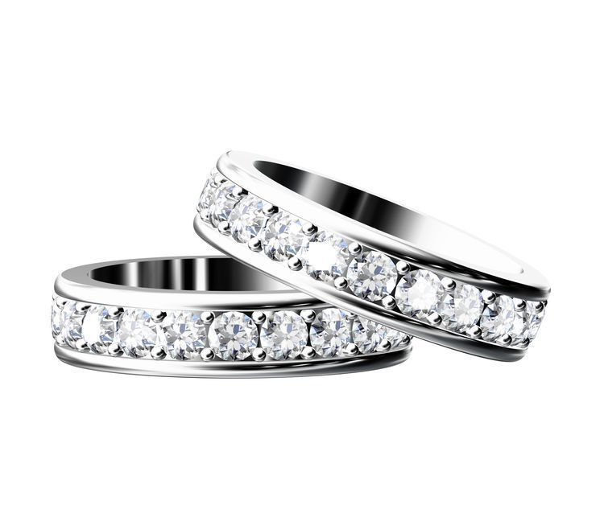

Compra de oro
Pagamos la máxima cotización del mercado por lingotes, monedas, joyas y piezas de oro, incluso rotas o en desuso.
Ver servicio
Empresa familiar con mas de 45 años de experiencia. Tasación gratuita, pago inmediato y la máxima discreción. Compramos y vendemos oro, plata, joyas, diamantes, relojes, monedas y antigüedades.

Joyería DiOro es una empresa familiar establecida en Zaragoza, especializada en la compraventa de oro, plata, joyas, diamantes, relojes, monedas y antigüedades. Con mas de cuatro décadas en el sector, somos una joyería de referencia en la ciudad.
Nuestro equipo de especialistas en gemología, numismática y relojería ofrece un servicio profesional, discreto y con los mejores precios del mercado actualizados al día.
Cuatro décadas de experiencia avalan un servicio integral en joyería, gemología, numismática y relojería. Tasación inmediata, precios de mercado y total confidencialidad.
Pagamos la máxima cotización del mercado por lingotes, monedas, joyas y piezas de oro, incluso rotas o en desuso.
Ver servicioValoramos y adquirimos joyas de todo tipo: anillos, pendientes, pulseras, collares, colgantes y gemelos.
Ver servicioEquipo de gemólogos certificados que valoran cada piedra según los estándares internacionales de Rapaport.
Ver servicioAdquirimos relojes de alta gama: Rolex, Patek Philippe, Cartier, Omega, Audemars Piguet y muchas mas marcas.
Ver servicioJoyas nuevas y de segunda mano, piezas de autor y diseño personalizado a medida en nuestro taller propio.
Ver servicioReparación de joyas y relojes, baños de rodio, engaste de piedras, grabados y ajustes de talla.
Ver servicioQuien nos conoce, repite. Y ese es nuestro mejor aval.
226 reseñas verificadas de clientes reales. Estas son algunas de sus opiniones.
Visité recientemente y la experiencia fue insuperable. Tienen piezas hermosas a precios muy razonables. Me trataron con mucha amabilidad, explicando cada detalle y respondiendo a todas mis preguntas.
Evaluación profesional de las joyas que tengo en casa. Después de haber visitado otras joyerías que no estaban dispuestas a hacerlo o asesorarme, la recomiendo encarecidamente.
Me quedé encantado con su trabajo y su amabilidad.
Los recomiendo. El mejor precio de oro y un servicio excelente.
Profesionales y personas maravillosas.

Instituto internacional de gemología con sede en Amberes, referencia mundial en certificación de diamantes.

Asociación Española de Numismáticos Profesionales y Federación Española. Miembro fundador de ANZAR.

Fábrica Nacional de Moneda y Timbre - Real Casa de la Moneda. Distribuidores autorizados.

Traiga sus joyas, oro, relojes o monedas y nuestros especialistas los tasarán en el acto, de forma gratuita y confidencial. Si le interesa vender, el pago es inmediato. Si prefiere pensarlo, no hay ningún compromiso.
También disponemos de una sala privada para atender colecciones, herencias o piezas de alto valor con la máxima discreción.
Realizamos una tasación gratuita y sin compromiso en el momento. Nuestros especialistas evalúan cada pieza in situ, determinan su valor según la cotización actualizada del mercado y le ofrecen un precio justo. Si acepta, el pago es inmediato en efectivo, transferencia o cheque.
Sí. Compramos oro, plata y joyas independientemente de su estado: piezas rotas, desparejadas, antiguas o en desuso. Lo que cuenta es el material y la calidad de las piedras, no la apariencia exterior.
Compramos relojes de todas las marcas, con especial interés en Patek Philippe, Rolex, Cartier, Omega, Hublot, Audemars Piguet, Vacheron Constantin, Tag Heuer, Panerai, IWC, Bvlgari y Breitling, entre otras.
Sí. Para colecciones voluminosas o piezas difíciles de transportar, nuestro equipo de especialistas se desplaza a su domicilio. También aceptamos fotografías para una valoración preliminar.
Estamos en la Calle León XIII, 25 (junto a El Corte Inglés de Sagasta), 50008 Zaragoza. De lunes a viernes de 10:00 a 13:30 y de 17:00 a 20:30. Sábados de 10:00 a 13:30.
Sí. Valoramos todo el patrimonio heredado (joyas, monedas, relojes, objetos de plata, antigüedades) y creamos lotes equitativos para su reparto justo entre los herederos. Si lo desean, también compramos parte o la totalidad de los lotes con pago inmediato.
Junto a El Corte Inglés de Sagasta, en la Calle León XIII, 25. Venga a conocernos sin compromiso.